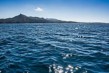
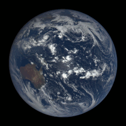
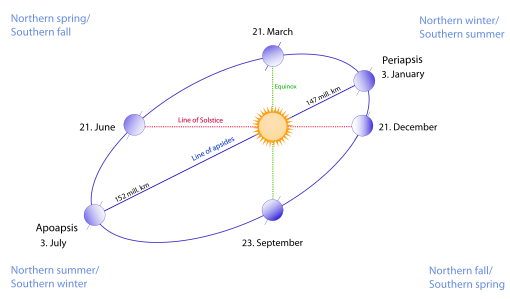

Earth is the third planet from the Sun and the only astronomical object known to harbor life. While large volumes of water can be found throughout the Solar System, only Earth sustains liquid surface water. About 71% of Earth's surface is made up of the ocean, dwarfing Earth's polar ice, lakes, and rivers. The remaining 29% of Earth's surface is land, consisting of continents and islands. Earth's surface layer is formed of several slowly moving tectonic plates, interacting to produce mountain ranges, volcanoes, and earthquakes. Earth's liquid outer core generates the magnetic field that shapes the magnetosphere of the Earth, deflecting destructive solar winds.
The atmosphere of the Earth consists mostly of nitrogen and oxygen. Greenhouse gases in the atmosphere like carbon dioxide (CO2) trap a part of the energy from the Sun close to the surface. Water vapor is widely present in the atmosphere and forms clouds that cover most of the planet. More solar energy is received by tropical regions than polar regions and is redistributed by atmospheric and ocean circulation. A region's climate is governed by latitude, but also by elevation and proximity to moderating oceans. In most areas severe weather, such as tropical cyclones, thunderstorms, and heatwaves, occurs and greatly impacts life.
Earth is an ellipsoid with a circumference of about 40,000 km. It is the densest planet in the Solar System. Of the four rocky planets, it is the largest and most massive. Earth is about eight light minutes away from the Sun and orbits it, taking a year (about 365.25 days) to complete one revolution. Earth rotates around its own axis in slightly less than a day (in about 23 hours and 56 minutes). Earth's axis of rotation is tilted with respect to the perpendicular to its orbital plane around the Sun, producing seasons. Earth is orbited by one permanent natural satellite, the Moon, which orbits Earth at 380,000 km (1.3 light seconds) and is roughly a quarter as wide as Earth. The Moon always faces the Earth with the same side through tidal locking and causes tides, stabilizes Earth's axis, and gradually slows its rotation.
Earth, like most other Solar System bodies formed 4.5 billion years ago from gas of the early Solar System. During the first billion years of Earth's history the ocean formed and then life developed within it. Life spread globally and began to affect Earth's atmosphere and surface, leading to the Great Oxidation Event two billion years ago. Humans emerged 300,000 years ago, and have reached a population of 8 billion today. Humans depend on Earth's biosphere and natural resources for their survival, but have increasingly impacted Earth's environment.
The total surface area of Earth is about 510 million km2 (197 million sq mi). Earth's surface can be divided into two hemispheres, such as into the Northern and Southern Hemisphere, or the Western and Eastern Hemisphere.
Most of the surface is made of water, in liquid form or in smaller amounts as ice. 70.8% (361.13 million km2 (139.43 million sq mi)) of the Earth's surface consists of the interconnected ocean, making it Earth's global ocean or world ocean. This makes Earth, along with its vibrant hydrosphere a water world or ocean world, particularly in Earth's early history when the ocean is thought to have possibly covered Earth completely. The world ocean is commonly divided into the Pacific Ocean, Atlantic Ocean, Indian Ocean, Southern Ocean and Arctic Ocean, from largest to smallest. Below the ocean's surface are the continental shelf, mountains ,volcanoes, oceanic trenches, submarine canyons, oceanic plateaus, abyssal plains, and a globe-spanning mid-ocean ridge system.

In contrast, Earth's land makes 29.2%, or 148.94 million km2 (57.51 million sq mi) of Earth's surface area. Earth's land consists of many islands around the globe, but mainly of four continental landmasses, which are from largest to smallest: Afroeurasia,America, Antarctica and Australia. These landmasses are further broken down and grouped into the continents. The terrain varies greatly and consists of mountains, deserts, plains, plateaus, and other landforms. The elevation of the land surface varies from the low point of −418 m (−1,371 ft) at the Dead Sea, to a maximum altitude of 8,848 m (29,029 ft) at the top of Mount Everest. The mean height of land above sea level is about 797 m (2,615 ft).
The continental crust consists of lower density material such as the igneous rocks granite and andesite. Less common is basalt, a denser volcanic rock that is the primary constituent of the ocean floors. Sedimentary rock is formed from the accumulation of sediment that becomes buried and compacted together. Nearly 75% of the continental surfaces are covered by sedimentary rocks, although they form about 5% of the crust. The third form of rock material found on Earth is metamorphic rock, which is created from the transformation of pre-existing rock types through high pressures, high temperatures, or both. The most abundant silicate minerals on Earth's surface include quartz, feldspars, amphibole, mica, pyroxene and olivine. Common carbonate minerals include calcite (found in limestone) and dolomite.
Erosion and tectonics, volcanic eruptions, flooding, weathering, glaciation, the growth of coral reefs, and meteorite impacts are among the processes that constantly reshape Earth's surface over geological time. The pedosphere is the outermost layer of Earth's continental surface and is composed of soil and subject to soil formation processes. The total arable land is 10.7% of the land surface, with 1.3% being permanent cropland. Earth has an estimated 16.7 million km2 (6.4 million sq mi) of cropland and 33.5 million km2 (12.9 million sq mi) of pastureland
Earth's rotation period relative to the Sun—its mean solar day—is 86,400 seconds of mean solar time (86,400.0025 SI seconds). Because Earth's solar day is now slightly longer than it was during the 19th century due to tidal deceleration, each day varies between 0 and 2 ms longer than the mean solar day.
Earth's rotation period relative to the fixed stars, called its stellar day by the International Earth Rotation and Reference Systems Service (IERS), is 86,164.0989 seconds of mean solar time (UT1), or 23h 56m 4.0989s. Earth's rotation period relative to the precessing or moving mean March equinox (when the Sun is at 90° on the equator), is 86,164.0905 seconds of mean solar time (UT1) (23h 56m 4.0905s). Thus the sidereal day is shorter than the stellar day by about 8.4 ms.
Apart from meteors within the atmosphere and low-orbiting satellites, the main apparent motion of celestial bodies in Earth's sky is to the west at a rate of 15°/h = 15'/min. For bodies near the celestial equator, this is equivalent to an apparent diameter of the Sun or the Moon every two minutes; from Earth's surface, the apparent sizes of the Sun and the Moon are approximately the same.
Earth orbits the Sun, making Earth the third-closest planet to the Sun and part of the inner Solar System. Earth's average orbital distance is about 150 million km (93 million mi), which is the basis for the Astronomical Unit and is equal to roughly 8.3 light minutes or 380 times Earth's distance to the Moon.
Earth orbits the Sun every 365.2564 mean solar days, or one sidereal year. With an apparent movement of the Sun in Earth's sky at a rate of about 1°/day eastward, which is one apparent Sun or Moon diameter every 12 hours. Due to this motion, on average it takes 24 hours—a solar day—for Earth to complete a full rotation about its axis so that the Sun returns to the meridian.
The orbital speed of Earth averages about 29.78 km/s (107,200 km/h; 66,600 mph), which is fast enough to travel a distance equal to Earth's diameter, about 12,742 km (7,918 mi), in seven minutes, and the distance to the Moon, 384,000 km (239,000 mi), in about 3.5 hours.
The Moon and Earth orbit a common barycenter every 27.32 days relative to the background stars. When combined with the Earth-Moon system's common orbit around the Sun, the period of the synodic month, from new moon to new moon, is 29.53 days. Viewed from the celestial north pole, the motion of Earth, the Moon, and their axial rotations are all counterclockwise. Viewed from a vantage point above the Sun and Earth's north poles, Earth orbits in a counterclockwise direction about the Sun. The orbital and axial planes are not precisely aligned: Earth's axis is tilted some 23.44 degrees from the perpendicular to the Earth-Sun plane (the ecliptic), and the Earth-Moon plane is tilted up to ±5.1 degrees against the Earth-Sun plane. Without this tilt, there would be an eclipse every two weeks, alternating between lunar eclipses and solar eclipses.
The Hill sphere, or the sphere of gravitational influence, of Earth is about 1.5 million km (930,000 mi) in radius. This is the maximum distance at which Earth's gravitational influence is stronger than the more distant Sun and planets. Objects must orbit Earth within this radius, or they can become unbound by the gravitational perturbation of the Sun. Earth, along with the Solar System, is situated in the Milky Way and orbits about 28,000 light-years from its center. It is about 20 light-years above the galactic plane in the Orion Arm
